This page brings together basic information about the Newa (or Pracalit) script and its use for the Newar language. It aims to provide a brief, descriptive summary of the modern, printed orthography and typographic features, and to advise how to write Newar using Unicode.
Newa (also known as Prachalit or Nepaalalipi) is a Brahmi-derived script used principally to write the Tibeto-Burman language Newar (also known as Nepal Bhasa). The language is spoken by around 800,000 people, predominantly in the Kathmandu valley (the 5th most spoken language in Nepal), plus 14,000 in Sikkim, where it is recognised as a state language. The Newar language is mostly written in Devanagari, but there is a movement to promote more use of the Newa script.
It has also been used to write Sanskrit, Bengali, Maithili, and Hindi.
𑐣𑐾𑐰𑐵𑑅 𑐨𑐵𑐫𑑂newaː bʱajNewa (Newar)
𑐣𑐾𑐥𑐵𑐮 𑐨𑐵𑐲𑐵nepal bʱasaNewar (Nepalese)
The script emerged in the 10th century and was actively used until Gorkha rule ended the reign of Newar dynasties in 1769, after which the use began to decline. The use of the Newa script and Newar language was banned by the Rana government in 1905, with harsh treatment of proponents. When Rana rule ended in 1951, the ban was lifted, but the effects are still felt.
A revival initiative gained momentum in the 1980s, and a standard was created by the Nepal Lipi Guthi with the help of leading scholars in 1989
Newa is one of at least 6 scripts used for writing Nepali languages, which include Ranjana, Bhujimol, Kutila, Golmol, and Litumol.
The Newa script is an abugida. Consonants carry an inherent vowel which can be modified by appending vowel signs to the consonant. See the table to the right for a brief overview of features for the modern Newar orthography.
A unusual feature of Newa orthography is that vowel signs with a wavy horizontal line replace the flat headstroke of the base consonant. Newa also has consonant-vowel ligatures.
Newa runs left to right in horizontal lines. Words are separated by spaces.
The 29 consonant letters used for Newar include precomposed characters for 4 out of 6 murmured consonants.
Consonant clusters are normally rendered using fused forms. A visible virama may be used. Initial RA is rendered as a reph over the top right of the following consonant.
The Newar orthography is an abugida. Most sources list a single inherent vowelə, however the inherent vowel after w appears to be ɔ. Other vowels following a consonant are mostly written using dedicated combining marks.
The vowels ɛː and æː in Katmandhu Newar are written using the letter 𑐫𑑂, which always retains its visible virama, even if word-medial.
Newa has 1 pre-base glyph, and has 4 circumgraphs that form only in certain character combinations, and do not decompose. There are 3 multipart vowel signs if the vowel lengthener is counted as part of the vowel.
Newar vowel signs are involved in a number of unusual, context-dependent shaping behaviours, including alternate shapes for vowel signs, integration of vowel signs into the consonant's headstroke, and the formation of circumgraphs for certain consonant-vowel combinations.
The vowel signs and independent vowels are combined with diacritics to indicate various combinations of vowel length and nasalisation. The i and u sounds have different symbols for short and long values, but 𑑅 is used to indicate length for the other vowels. 𑑃 is used to nasalise a short vowel, and 𑑄 for a long vowel. Note, however, that where a sound has separate symbols for short and long, the latter nasalisation diacritic is used with the symbol for the short vowel.
Vowel absence is indicated in a regular fashion by the use of 11442.
There is a set of 4 vocalics, each with vowel sign and independent forms, but only 1 is used, and not in modern Newa.
This is the full set of characters needed to represent the Newar language vowels.
𑐀␣𑐁␣𑐂␣𑐃␣𑐄␣𑐅␣𑐊␣𑐋␣𑐌␣𑐍␣𑐫𑐵␣𑐶␣𑐷␣𑐸␣𑐹␣𑐾␣𑐿␣𑑀␣𑑁␣𑑂␣𑑃␣𑑄␣𑑅
Inherent vowel
𑐎
kəU+1140E NEWA LETTER KA
ə following a consonant is not written, but is seen as an inherent part of the consonant letter, so kə is written by simply using the consonant letter.
𑐎𑐮
Wiktionary transcriptions indicate that the inherent vowel after 𑐰 is pronounced ɔ
𑐰𑐔𑐸
𑐧𑑂𑐰𑐴
The inherent vowel can be lengthened and nasalised. This is indicated in the same way as for other vowels, except that there is no vowel sign involved.
Other than the inherent vowel, vowels following a consonant are mostly written using dedicated combining marks called vowel signs. The vowel signs are combined with other diacritics to indicate the various combinations of vowel length and nasalisation. See basicV for a summary.
The vowels ɛː and æː in Katmandhu Newar are written using the letter 𑐫𑑂, which always retains its visible virama, even if word-medial.
Newar vowel signs are involved in a number of unusual, context-dependent shaping behaviours, including alternate shapes for vowel signs, integration of vowel signs into the consonant's headstroke, and the formation of circumgraphs for certain consonant-vowel combinations.
Combining marks used for vowels
𑐎𑐷
kiːU+1140E NEWA LETTER KA + U+11437 NEWA VOWEL SIGN II
Newar uses the following dedicated combining marks for vowels. They may be used on their own, or in combination with other characters (see compositeV).
𑐶␣𑐷␣𑐸␣𑐹␣𑐾␣𑑀␣𑐵␣ ␣𑐿␣𑑁
An orthography that uses vowel signs is different from one that uses simple diacritics or letters for vowels, in that the vowel signs are generally attached to an orthographic syllable, rather than just applied to the letter of the immediately preceding consonant. In other words, pre-base vowel sign components are rendered before a whole consonant cluster if that cluster is rendered as a conjunct (see prebase for an example).
Five vowel signs are spacing marks, meaning that they consume horizontal space when added to a base consonant.
Shaping considerations
𑐎𑐸 𑐐𑐸
The shape of 11438 and (to a lesser extent) 11439 varies according to the consonant used. For example, compare 𑐎𑐸 and 𑐐𑐸. For more, see u_shape.
𑐎 𑐎𑐾
Another noteworthy aspect of shaping is that certain vowel signs replace the headstroke of the consonant they follow. For example, compare 𑐎 and 𑐎𑐾. For more, see headstroke_assimilation.
Vowel letters using 𑐫𑑂
Two basic vowel sounds found in Katmandhu are represented using 𑐫𑑂 (usually a consonant letter).
ɛː is written 𑐫𑑂.
𑐦𑐫𑑂
𑐪𑐫𑑂𑐏𑐵
æː is written 𑐵𑐫𑑂.
𑐎𑐥𑐵𑐫𑑂
𑐨𑐵𑐫𑑂𑐮𑐔𑑄
Note that both are long vowels, and that when used word-medially it is necessary to use 200C after the virama, so that it remains visible.
A number of words use this as a standalone vowel, when word-medial or word-final. For example:
𑐡𑐾𑐫𑑂
𑐎𑑂𑐰𑑃𑐫𑑂
Multipart vowels
The multipart vowels in Newa are described in nasalisation, just below.
Vowel length and nasalisation
𑑅␣𑑃␣𑑄
It is common to see Newar vowels described in a chart which shows long and nasalised forms.
Vowel length is indicated by using a dedicated character in the case of 11437 and 11439, but otherwise by adding 11445.
Nasalisation is indicated using 11443 for a short vowel, and 11444 for a long vowel.
Long, nasalised ĩː and ũː vowels use the short form of the vowel sign.m,5-6
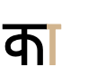
From left to right, short, long, nasalised, and long nasalised forms of kæ, respectively.
The following matrix shows these various forms for the vowel signs. The same rules apply to the standalone vowel letters.
Short
Long
Short nasal
Long nasal
i
𑐶
𑐷
𑐶𑑃
𑐶𑑄
u
𑐸
𑐹
𑐸𑑃
𑐸𑑄
e
𑐾
𑐾𑑅
𑐾𑑃
𑐾𑑄
o
𑑀
𑑀𑑅
𑑀𑑃
𑑀𑑄
æ
𑐵
𑐵𑑅
𑐵𑑃
𑐵𑑄
a
inherent
𑑅
𑑃
𑑄
əi
-
𑐿
-
𑐿𑑄
əu
-
𑑁
-
𑑁𑑄
The short, long, and nasalised versions of vowels.
Pre-base vowel sign
𑐎𑐶
kiU+1140E NEWA LETTER KA + U+11436 NEWA VOWEL SIGN I
𑐶
The short i sound is written using 11436, which appears to the left of the base consonant letter or cluster.
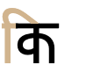
The combination 𑐎𑐶 produces a pre-base positioned glyph.
This combining mark is always typed and stored after the base consonant. The font places the glyph before the base consonant.
When an orthographic syllable begins with a consonant cluster that is rendered as a conjunct, the vowel sign is rendered before the start of the orthographic syllable, eg. here are 3 sets of consonant clusters, each followed by i when spoken, but the vowel sign appears to the left of each cluster.𑐗𑑂𑐏𑐶 𑐳𑑂𑐟𑐶 𑐧𑑂𑐬𑐶jkhi sti bri
Circumgraphs
𑐐𑑀
ɡoU+11410 NEWA LETTER GA + U+11440 NEWA VOWEL SIGN O
Another idiosyncracy of Newa orthography is that 5 vowel signs change shape when attached to the base consonants that don't have a headstroke. Four of those vowel signs are so-called 'wavy-headed', and when combined with the 7 headless consonants they are rendered as circumgraphs.p,6
The following table shows the various forms, combined with both 𑐎 (has headstroke) and 𑐐 (headless). The last 4 vowel signs combined with the headless GA produce the circumgraphs.
With headstroke
Without headstroke
11435
𑐎𑐵
𑐐𑐵
1143E
𑐎𑐾
𑐐𑐾
11440
𑐎𑑀
𑐐𑑀
1143F
𑐎𑐿
𑐐𑐿
11441
𑐎𑑁
𑐐𑑁
Vowels that become circumgraphs with headless consonants.
No special encoding is needed to create these circumgraph forms. The shape change should be effected automatically by the font. Also, and usefully, unlike some other Indic scripts, it is not possible to incorrectly compose these circumgraph forms by combining other Newa characters, since the shapes don't exist in the character set.
Standalone vowels
𑐂␣𑐃␣𑐄␣𑐅␣𑐊␣𑐌␣𑐀␣𑐀𑐫𑑂␣𑐁𑐫𑑂␣𑐁␣ ␣𑐋␣𑐍
Newa represents standalone vowels using a set of independent vowel letters. The set includes a character to represent initial ə, the inherent vowel sound. There are separate letters for short and long versions of i and u, but diacritics are used to lengthen the remaining letters (see nasalisation).
𑐀𑐥𑐵
𑐃𑐮𑐔𑑄
𑐳𑐮𑐵𑐂
As mentioned earlier, a number of words also use 𑐫𑑂 as a standalone vowel, when word-medial or word-final. For example:
𑐩𑐾𑐫𑑂
𑐥𑐸𑐮𑐶𑐎𑑂𑐰𑑃𑐫𑑂
In Sanskrit texts, elision of an initial a due to sandhi is indicated using 11447.
Consonants with no following vowel
Newa uses 11442 (the Newa equivalent of the Sanskrit virama) to indicate that there is no inherent vowel after a consonant. For example, compare the following.
𑐫𑐾𑐟𑑂
𑐨𑐵𑐬𑐟
All syllable codas are written with a following virama.
Other consonant clusters also involve typing and storing this character after the consonant(s) with no following vowel, but if the cluster forms a conjunct then the virama is not rendered visibly (see clusters).
𑐎𑐳𑑂𑐟𑐶
(The virama is also frequently found as part of the vowel 𑐫𑑂, where it has a different function.)
𑐟𑑃𑐫𑑂
Vowel sounds to characters
This section maps Newar vowel sounds to common graphemes in the Newa orthography, where vs indicates a vowel sign, and s a standalone vowel. Click on a grapheme to find other mentions on this page (links appear at the bottom of the page). Click on the character name to see examples and for detailed descriptions of the character(s) shown.
Sounds listed as 'infrequent' are allophones, or sounds used for foreign words, etc.
This section lists letters representing sounds of the Kathmandu dialect of the Newar language (shown in the table just above). See the next section for letters used in other dialects, or other languages (such as Sanskrit).
Whereas the table just above takes you from sounds to letters, the following simply lists the basic consonant letters (however, since the orthography is highly phonetic there is little difference in ordering).
The following letters are used in other dialects, or other languages (such as Sanskrit).
𑐚␣𑐜␣𑐛␣𑐝␣ ␣𑐱␣𑐲␣ ␣𑐞␣𑐘␣𑐙␣𑐓␣ ␣𑐬␣𑐭
'Breathy' consonants
A feature of Newar is the number of consonants, besides the plosives, that are pronounced with accompanying breathiness. The following list shows these sounds and the way they are written.
𑐪␣𑐤␣𑐙␣𑐓␣𑐴𑑂𑐰␣𑐭␣𑐯␣𑐴𑑂𑐫
Unicode provides single characters for most of these.
Observation: Sources indicate that wʰ and jʰ are also part of the Newar phonetic repertoire, and are represented by these conjunct forms, but Unicode doesn't provide precomposed characters for them. They therefore have to be composed as consonant clusters.
Observation: One source stated that when these sounds are used for transcriptions of Sanskrit, they should all be written as consonant clusters, rather than using the precomposed characters.
In Unicode, the conjunct formation is achieved by adding 11442 between the consonants. The font hides the virama glyph automatically when a conjunct is formed.
Conjuncts are normally formed by fusing glyphs for the component characters, so that they fit within the normal character height. One or both of the original letters may be unrecognisable, but generally the parts, though simplified, are recognisable.
It is most common for glyphs to merge vertically, although there are also many that merge diagonally. A few merge horizontally. See a list of combinations.
pla
pkʰa
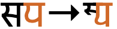
spa
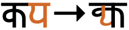
kpa
Various different ways of merging consonant shapes to form conjuncts.
For a detailed analysis of conjunct composition see Pandey, pages 7–10.
Initial RA in clusters
A trailing RA has a fairly regular appearance as a subjoined glyph below the preceding consonant, though on the left side.
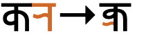
kra
A trailing RA in a cluster is rendered as a subjoined glyph.
However, like many other Indian scripts, 𑐬 at the beginning of a cluster is represented idiosyncratically, and appears as a small, superscript glyph over the top right of the following syllable.
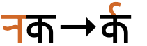
rka
An initial RA in a cluster is rendered as a superscript over the following consonant.
Visible virama
In some circumstances a cluster doesn't give rise to a conjunct. In that case, the virama is displayed below the initial consonant. fig_conjunct_virama shows an example spotted in a newspaper.
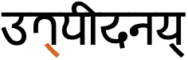
A consonant cluster displayed with a visible virama.
If the font automatically substitutes a conjunct, but you don't want it to you can use 200C immediately after the virama to prevent the fusion of the characters. (If there is no consonant following, as in the case at the end of the line, this formatting character isn't needed.)
Triple-consonant clusters
Newa has a few clusters involving 3 consonants. fig_conjunct_ndr gives an example.
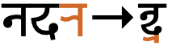
ndra
A conjunct composed of 3 consonants.
The following is a list of the more common triple conjuncts, according to a Noto Fonts issue on GitHub.g1203
Observation: The list just above raises 2 questions: (a) why sequences such as nh don't use the precomposed code point, (b) which of these are used for Newar, as opposed to Sanskrit or another language?
Consonant length
Gemination and consonant lengthening are handled using the normal approach to consonant clusters (see clusters).
Consonant sounds to characters
This section maps Newar consonant sounds to common graphemes in the Newa orthography. Click on a grapheme to find other mentions on this page (links appear at the bottom of the page). Click on the character name to see examples and for detailed descriptions of the character(s) shown.
Sounds listed as 'infrequent' are allophones, or sounds used for foreign words, etc.
p
𑐥
𑐥𑐮𑐾𑐳𑑂𑐰𑐵𑑄
pʰ
𑐦
𑐦𑐫𑑂
b
𑐧
𑐧𑐩𑐹
bʱ
𑐨
𑐨𑐵𑐬𑐟
t
𑐟
𑐟𑐵𑐮𑑂𑐮𑐵
tʰ
𑐠
𑐠𑐵𑐫𑑂
t͡ɕ
𑐔
𑐔𑐵𑐎𑑅
t͡ɕʰ
𑐕
𑐕𑐶𑐐𑐸
𑐎𑑂𑐲
𑐎𑑂𑐲𑐶𑐟𑐶𑐖
d
𑐡
𑐡𑐣𑐵𑐳𑐸
dʱ
𑐢
𑐢𑐬𑑂𑐩
d͡ʑ
𑐖
𑐖𑐷𑐳𑑂𑐰𑐵𑑄
d͡ʑʱ
𑐗
𑐗𑐵𑐳𑐸
ʈ
𑐚
ʈʰ
𑐛
ɖ
𑐜
𑐜𑑂𑐰𑐵𑐎𑐸
ɖʱ
𑐝
k
𑐎
𑐎𑐮
kʰ
𑐏
𑐏𑐵𑐟𑐵
ɡ
𑐐
𑐐𑐳𑐵
ɡʱ
𑐑
𑐑𑑅𑐔𑐵
ɡj
𑐖𑑂𑐘
s
𑐳
𑐳𑐣𑑂𑐟𑑂𑐬𑐵𑐳𑐶
𑐱 Infrequent. Generally used for loan words.
𑐱𑐣𑐶𑐧𑐵𑑅
𑐲 Infrequent. Generally used for loan words.
h
𑐴
𑐴𑐮𑐶𑐩
m
𑐩
𑐩𑐔𑐵
mʰ
𑐪
𑐪𑐐𑑅𑐳
n
𑐣
𑐣𑐐𑐬
nʰ
𑐤
𑐤𑐾𑐥𑐸
ɳ
𑐞
𑐀𑐬𑑂𑐠𑐥𑐹𑐬𑑂𑐞
ɲ
𑐘
𑐥𑐘𑑂𑐖𑐵𑐧𑐷
ɲʰ
𑐙
ŋ
𑐒
𑐒
ŋʰ
𑐓
w
𑐰
𑐰𑐵𑑄𑐐𑐸
wʰ
𑐴𑑂𑐰
𑐴𑑂𑐰𑐖𑑂𑐫𑐵
r
𑐬
𑐟𑐬𑐰𑐵𑐬
rʰ
𑐭
l
𑐮
𑐮𑐵𑐎𑐵𑑄
lʰ
𑐯
𑐯𑐵𑑅
j
𑐫
𑐫𑐵𑐳𑐸
jʰ
𑐴𑑂𑐫
𑐴𑑂𑐫𑐵𑑄𑐐𑐸
Symbols
Om.The symbol for the word Om is produced using 𑑉.
Encoding choices
Visually, several of the standalone vowels and some vowel signs look as it they could be composed of smaller parts. This section gives guidance on which approach is best.
Newa is relatively resistant to incorrect coding techniques, but it is possible that someone may occasionally try to use 2 characters rather than the single character which is canonical. Doing so produces text that will not match correctly encoded text for search, spell-checking, and so on, and so should be avoided. The list below shows some examples.
Use
Do not use
𑐁
11400 11435
𑐌
11404 11440
11440
1143E 11435
Unclear usage
The following code points in the Unicode block need further investigation. Their usage and/or their relevance to writing modern Newar is not clear from the research done so far.
11446 Combined with a letter to represent sounds not native to the script, such as in loan words.
𑑇 Used to elide an initial A in Sanskrit as a result of sandhi.p,11
𑑈 Represents nasalisation in some manuscripts. In other sources, a form of punctuation.p,11
𑑌 Indicates end of a text block larger than a sentence.p,11
𑑎 Used for marking breaks and filling gaps in a line at a margin.p,11
𑑏 Marks abbreviations. p,11
𑑊 Represents the Sanskrit invocation सिद्धिरस्तुsiddhirastumay there be success. It is written at the beginning of a text, often in the combination 𑑊𑑉. It corresponds to the sign ঀ [U+0980 BENGALI ANJI] in related scripts such as Bengali.p,11
𑑛 Used for filling gaps in a line and as a mark for end of text.p,11
𑑟
𑑝
11460
11461
1145E
For other glyphs found in Newa manuscripts, see Pandey.p,11
Numbers
Digits
Newa has a set of native digits.
𑑐␣𑑑␣𑑒␣𑑓␣𑑔␣𑑕␣𑑖␣𑑗␣𑑘␣𑑙
Pandey describes variant shapes for 3, 4, and 5, which are to be managed by font.p,10
Headstrokes & headlines. Pandey writes: The headstrokes of Newar letters do not connect to preceding or following letters. Connection of headstrokes of characters that form a syllable may occur, such as in the combination of a consonant letter and a dependent vowel sign. The majority of Newar manuscripts attest this behavior. However, there is no particular rule that describes the joining properties of headstrokes. Variations in the writing of headstrokes are to be attributed to scribal preferences. In modern digitized typefaces the headstrokes of glyphs connect, but this feature may be an influence of modern Devanagari typography.p,13
Headstrokes & headless consonants
The following 7 consonant letters have no headstroke. This leads to some special shaping for 5 vowel signs, including 4 that are changed into circumgraphs. See circumgraphs for details.
𑐐␣𑐠␣𑐢𑐛␣𑐱␣𑐞␣𑐘
Another idiosyncrasy of Newa is that consonant letters with headstrokes have that headstroke replaced by a wavy line by 4 of the same vowel signs. See headstroke_vowels.
Headstroke assimilation
A rather unusual feature of Newa orthography is that vowel signs with a wavy horizontal line replace the flat headstroke of the base consonant.
This includes vowels written with the following vowel signs: 1143E, 11440, 1143F, and 11441.p,6
The character 𑐎 with each of the wavy line vowel signs applied.
Alternative shapes for u
The sound u is produced by the letter 11438, but that letter can have a different shape when attached to different consonant letters. The vowel sign used to represent the long uː sound also has contextual variations, though not as many as the short vowel. All of these orthographic variants are produced automatically by the font; there is no need to use different characters.
The short sound is rendered as a curved shape with the following 4 consonant letters:p,7
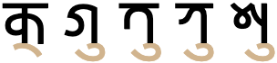
The normal shape for 11438 (left), and the alternate shape used with the consonants shown.
Both short and long sounds are also written as ligatures with the consonant letters 𑐖 and 𑐬, as shown in fig_u_ligatures.
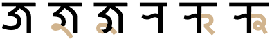
11438 and 11439 producing ligatures with 11416 (left) and 1142C (right).
The consonants 𑐨 and 𑐴 also take on special shapes when followed by a u-vowel (see bha_ha).
Special shapes for BHA & HA
𑐨 and 𑐴 have special shapes when combined with the 11438 or 11439, or any of the vocalic vowel signs.p,7
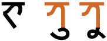
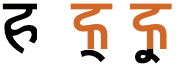
The normal shape (left) for BHA (top) and HA (bottom), and the alternate shape used with the U and UU vowels, or any of the vocalic vowel signs.
Additional contextual shaping for consonants carrying a u-related vowel sign can be seen in u_shape.
Explicit shaping controls
200C (ZWNJ) can be used to force the production of a visible virama, rather than a conjunct form.
Typographic units
Word boundaries
Word units are separated by spaces.
Graphemes
Grapheme clusters
Usually a typographic character unit correlates with the Unicode concept of grapheme clusters, but not in the case of conjuncts (in common with several other Indic scripts).
Conjuncts
Conjuncts and any dependent combining characters should never be split.
This creates a problem when dealing with Unicode grapheme clusters, because they stop after reaching a virama. So conjuncts usually contain multiple grapheme clusters. This produces incorrect segmentation as seen on the right in fig_grapheme_conjunct. Applications need to tailor the grapheme cluster rules to avoid splitting conjuncts.
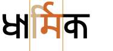
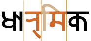
Segmentation of the word 𑐢𑐵𑐬𑑂𑐩𑐶𑐎 as it should be (left), and how it would be if grapheme clusters are used as the maximal unit (right).
Unfortunately, this is harder than it seems, because whether a conjunct is formed or not usually depends on the capabilities of the font – it cannot be determined solely by looking at the code points in memory. If a font doesn't contain the glyphs to create a conjunct it will render the consonant cluster with a visible virama. In that case, the grapheme cluster approach is appropriate.
Punctuation & inline features
Phrase & section boundaries
,␣𑑍␣:␣;␣?␣!␣𑑋␣𑑚␣𑑌
Newa uses a mixture of ASCII and native punctuation marks.
phrase
,
𑑍
;
:
sentence
𑑋
?
!
𑑚
section
𑑌
Observation: The Lipi Pau newspaper in 2009 used spaces before and after the newa danda.
Danda and double-danda in use.
Bracketed text
(␣)
Newar commonly uses ASCII parentheses to insert parenthetical information into text.
start
end
standard
(
)
Quotations & citations
‘␣’␣“␣”
Newar texts use quotation marks around quotations. Of course, due to keyboard design, quotations may also be surrounded by ASCII double and single quote marks.
start
end
initial
“
”
nested
‘
’
Single quotation marks are used for quotations within quotations.
Line & paragraph layout
Line breaking & hyphenation
Lines are mostly broken at inter-word spaces.
Like most writing systems, certain characters are expected not to start or end a line. For example, periods and commas shouldn't start a line, and opening parentheses shouldn't end a line.